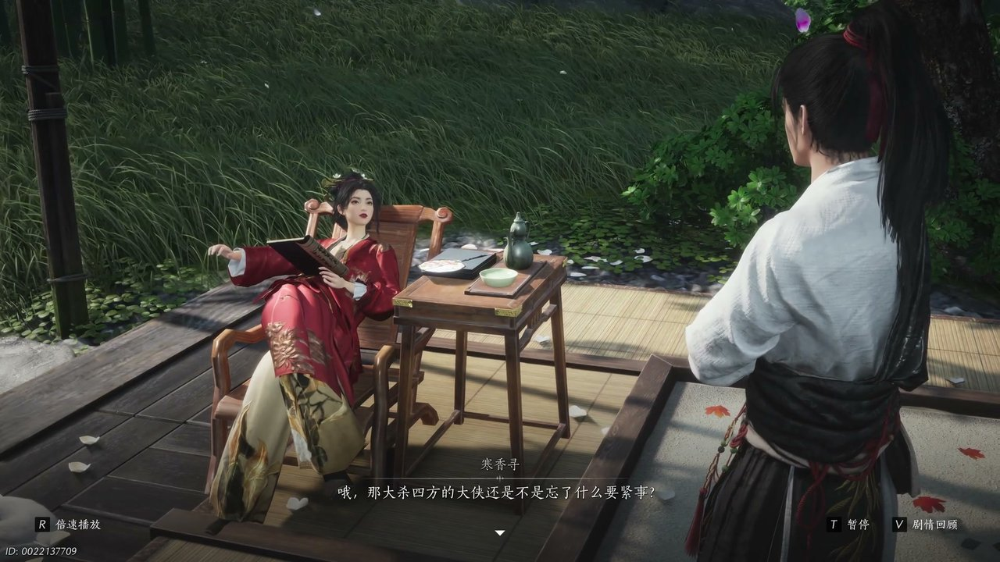
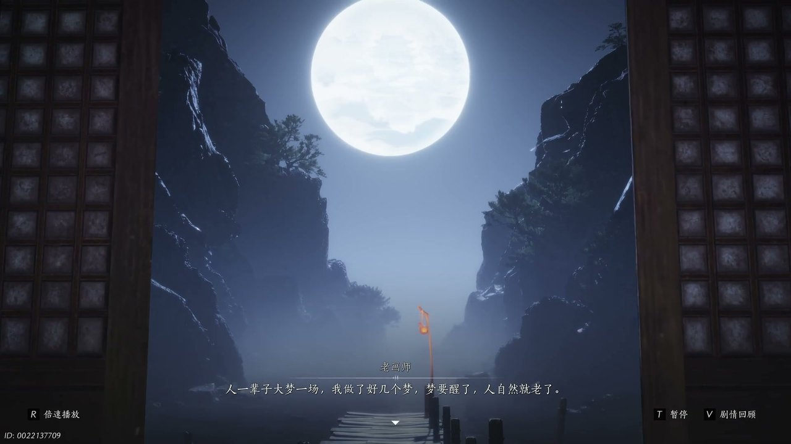
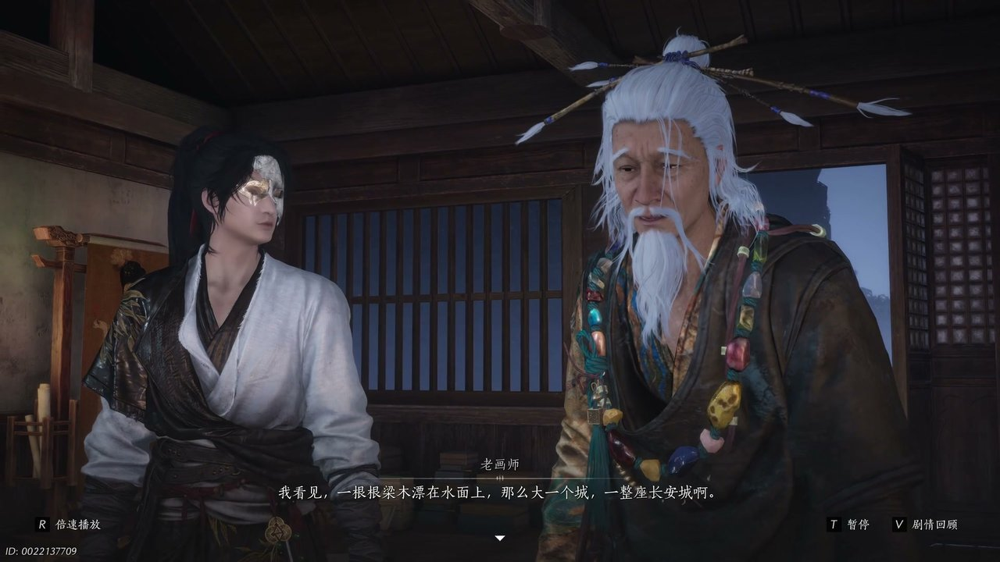
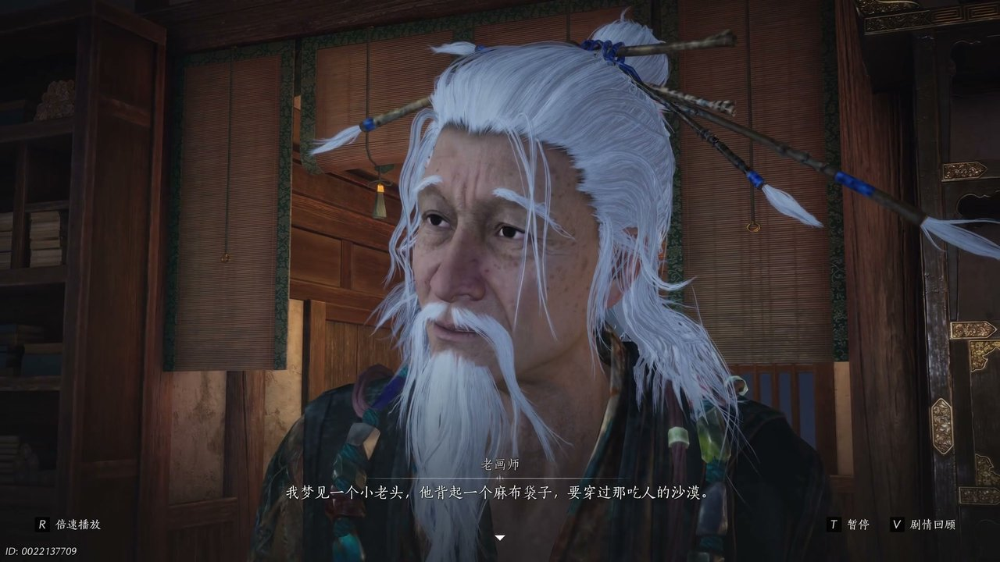
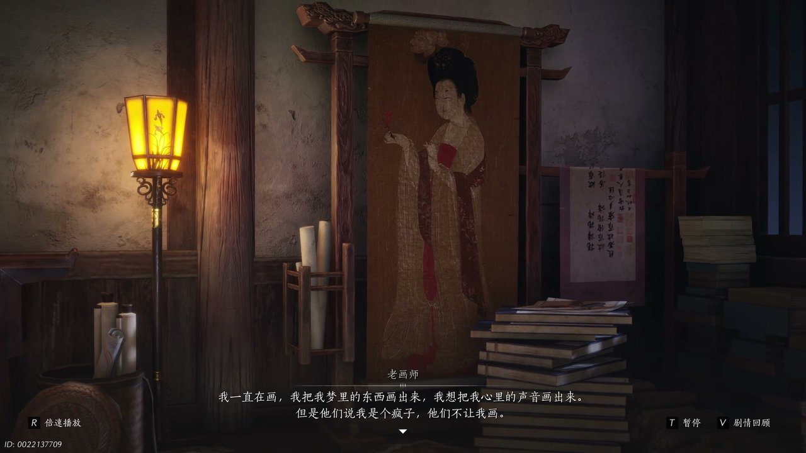
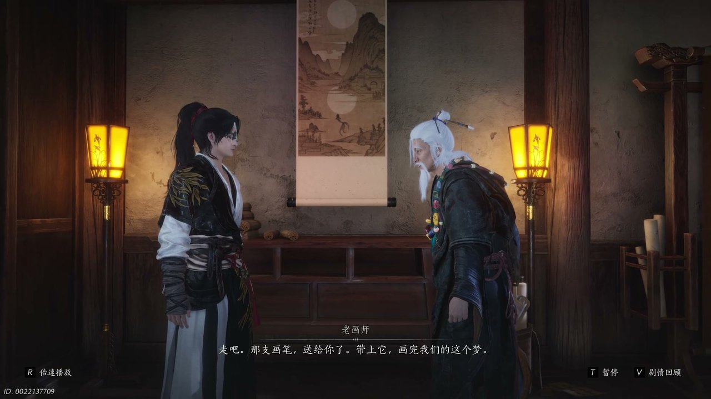

燕云背后的故事：第18集 梦
燕云背后的故事：第18集 梦

朋友们，上一集咱们说到——桃林塞秘境崩塌、金桃真相隐现、蓝傲执念求生，秦川夺宝棋局彻底陷入迷局。新来的朋友可能纳闷，少东家追查方白踪迹与金桃秘力，为何接连遭遇时空错乱与身份疑云。简单说，桃林塞的异象并非偶然，各方势力的算计、隐秘之人的蛰伏，都围绕金桃的终极秘密层层铺开。可他哪知道，梦境与现实早已交织缠绕，过往尘封的旧事正借着幻梦缓缓浮现。这不，少东家在迷离幻境之中，偶遇一位故人画师，解锁了深埋岁月的过往秘辛。

幻境之中光影朦胧，周遭景致虚实交错，少东家驻足环顾，目光落在前方缓步走来的老者身上。老者身形佝偻、鬓发全白，步履缓慢却沉稳，周身萦绕着淡淡的旧尘气息，与周遭幻境格格不入。少东家眉眼微动，出声试探道：“我们是不是见过腿脚忒慢”，语气带着几分熟悉与疑惑。老者抬眸看向少东家，神色淡然，缓缓回道：“我老了都比你先到”，随即继续前行，轻声补充：“这次又赶在你前头了”。少东家望着老者苍老的面容，瞬间认出对方身份，语气带着错愕感慨：“你是华师兄”，紧接着又低声呢喃：“你老了，你这么久这么老了呢”。老者神色平静，眼底藏着半生沧桑，静静伫立在幻境光影之中，静待后续交谈。

斑驳的幻境光影缓缓流转，将两人身影轻轻笼罩，老画师望着眼前的少东家，语气平和地诉说着半生际遇。他缓缓开口：“人一辈子大梦一场，我做了好几个梦，梦要醒了，人自然就老了”，字句平淡却满是怅然。少东家闻言面露不解，反驳道：“哪有人是这样”，随即话锋一转，提起心中牵挂：“方白你的朋友方白，他是个好人”。老画师微微颔首，轻声应道：“知道我知道了他呀，乘着他的风飞远了”。少东家眸光一凝，接连追问线索，疑惑发问：“你知道你也在桃林寺，这会送金桃的人是你”，又道出自己的感悟与疑惑：“我就是你也不全是我，可梦不来那些杯子鸟，当年你带着金桃去了长安，那你救到长安了吗”，目光紧紧锁定老画师，静待对方解答过往谜团。

谈及长安旧事，老画师眼底泛起浓重的悲凉，过往残破的记忆在脑海中尽数翻涌。他缓缓摇头，语气满是无力：“我没有”，随即细数昔日惨剧：“我看见一根根梁木漂在水面上，那么大一个城，一整座长安城啊，火烧过都砍过，打过砸过抢过”。回忆汹涌袭来，老画师声音愈发低沉，继续说道：“最后他们拆了它，拆了拆成一根根木头，漂在河里，飘远了，再也没了”。他抬手轻颤，眼底满是茫然与怅然，低声自语：“我也找不到我家了，金桃被我抱着，我们跟着木头和尸体泡在水里漂了很久，久到我都开始做梦”。残破的幻境画面随之更迭，映照出昔日长安城覆灭的惨烈光景，尽显岁月苍凉。

幻境光影层层变幻，老画师陷入绵长的梦境回忆，逐一诉说自己梦中所见的各色人与故事。他目光悠远，缓缓讲述：“我梦见一个小老头，他背起一个麻布袋子，要穿过那吃人的沙漠”，话音稍顿，继续娓娓道来：“我梦见一个苦闷的年轻人，他抱着琵琶冲出了家门，但他不知道自己是谁，又该往哪里去”。少东家静静聆听，适时出声补充：“还有两个姑娘”，老画师当即附和，接着描述梦境：“还有两个姑娘，她们要翻过那片群山，翻过那个关隘，牵着手向月亮那边跑去”。无数细碎的梦境片段交织浮现，囊括了世间众生的漂泊与迷茫，藏着不为人知的浮沉过往，少东家默然倾听，心中渐渐生出诸多感悟。

诸多梦境碎片消散，老画师收回悠远的目光，说起自己漂泊半生的执念与遭遇。他轻声讲述，梦醒之后自己漂泊至空屋之中，无所适从，便重拾画笔寄托心绪：“我一直在画，我把我梦里的东西画出来，我想把我心里的声音画出来”。可这份执念却不被世人理解，他无奈说道：“但是他们说我是个疯子，他们不让我画画”。为了坚守心中念想，他四处逃亡、四处作画，直至自我怀疑：“我到处逃，到处画，画到我也以为我是个疯子”。后来他亲手砸毁、划烂自己所有画作，直至寻得第一幅画作，梦见威风凛凛的雄狮，循着狮影追逐，最终在幻境之中遇见了少东家。老画师抬眸看向少东家，郑重开口：“你是那头狮子，这个梦实在太长了，长到我以为我要死了”。

幻境氛围渐归沉静，老画师知晓大梦将醒，坦然与少东家作别，交付最后的念想。他温和开口：“没想到还能在这里见到你，你已经做完你的梦啦，也该醒了”。少东家连忙追问金桃秘辛与过往谜团，询问青棠去向，老画师告知青棠已交付另一位方白，还透露方白知晓惊涛掌与诸多梦境秘事。随后老画师取出画笔，赠予少东家，叮嘱道：“那支画笔送给你了，带上它，画完我们的这个梦”。面对少东家再会与否的疑问，他淡然回道：“朋友就是想见的话，隔着千里在梦里也会再见，再见朋友”。临别之际，老画师留下一句深意绵长的话语：“她一直在”，话音落下，身形缓缓消散于幻境之中。少东家骤然回神，脱离绵长旧梦。
这一集看下来，我最大的感受就是大梦浮沉皆为过往，山河风骨从未湮灭。上一集里我们只知道秘境崩塌、群雄逐桃、蓝傲执念，到了这一集，我们解锁画师旧梦、长安过往、金桃渊源三条关键线索。老画师半生漂泊的真相究竟是什么？金桃隐藏的终极秘密能否被破解？虚实相生的梦境究竟藏着多少轮回伏笔？所有线索尽数收拢，旧梦谜底逐步显露，逝去的长安风骨化作世间不灭的信仰，少东家历经幻境洗礼，勘破了梦境与现实的关联，读懂了传承与理想的深意。下一集，不见山风云再起，妖女千叶携秘现身，少东家将凭借画师画笔与鲤鱼钥匙，解锁全新江湖秘局。虚实大梦彻底落幕，全新江湖纷争席卷而来！评论区说说你对长安意象、梦境轮回的猜想，点赞关注，下一集解锁秘钥启新局、千叶露真身的高能剧情！
关于我们
📱 公众号名称：三天游戏
✍️ 作者：曾三天
扫码关注公众号，获取每日最新资讯

商务合作与版权
商务合作 / 内容投稿 / 品牌推广
请关注公众号「三天游戏」后台留言联系
版权声明：本文由作者整理，转载需注明出处。